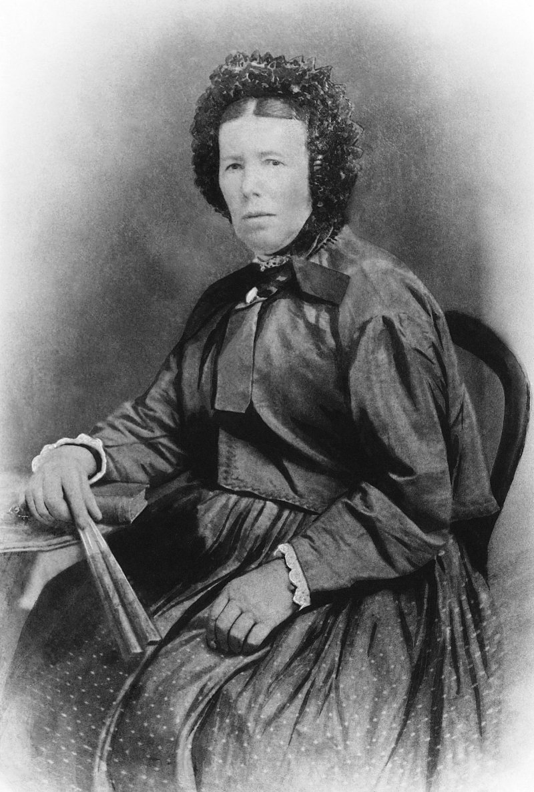
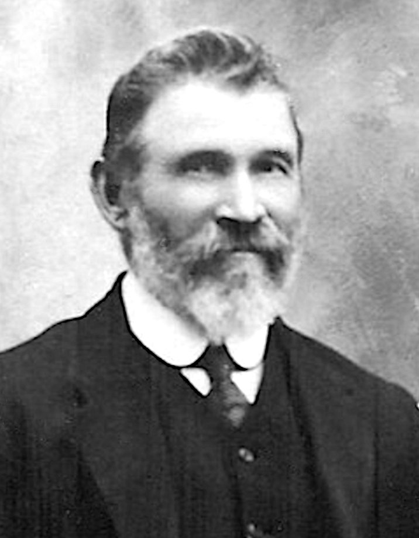

-
The Lobegeiger Family
Variously written as Lobegeiger, Lobegeyer, Lobegeiyer, Lobegeier, Lobegeir, Lobegier, Lobegeien, Lobegieger, Lobegeger, Lobegger, Lobeger, Lobegegor, Lubegegor, Lobegeaer, Laubegeyer, Laubejeyer, Lobejeger, Lobejaeyer, Lobejaeger, Lobejäger
Firstly a note about the spelling and pronunciation of the name: this is very likely an old name and has been pronounced in many different ways through the ages. The locality also is renowned for what is called "Plattdeutsch" (literally "Flat German") which until recently was regarded as a German dialect but is now recognised as a distinct language. One of the peculiarities of Platt is the pronunciation of the vowels and consonants. For instance, the letter 'g' is pronounced as a 'y', thus transforming a word like 'girl' into 'yirl'. Likewise, "Lobegeiger" would be pronounced "Lobeyeger" in some parts and as "Lobegeyer" in others. Since this is Platt, the writing of names is open to a transcription produced by the writer, so many variations prevail. Of course handwriting also complicates the matter.
As a matter of interest, the family records for the Pieper/Piper family have their marriage partners and children always written as "Lobejäger" which is still maintained in Germany as a last name. The "Jäger" part is a word meaning "hunter" in English. All other variations of the name have migrated to Australia with their respective name-holders.The two Lobegeiger, or Lobegeyer, families which are tied into ours both hailed from the Templin District of Brandenburg.Map of the Uckermark in Brandenburg, Prussia.
The green area is a map of modern Germany with the orange dot indicating the location of the Uckermark.
The red ellipses show the last locations of many branches of the family. Clockwise: Templin, Gerswalde, Fergitz, Stegelitz-Charlottenhof, Wilmersdorf, Peetzig, Siebershof, Alt-Temmen, Götschendorf.
(double-click on picture to view a larger version)
From Meyers Gazetteer - Charlottenhof (53)
Charlottenhof, Templin, Potsdam, Brandenburg, Preussen
Charlottenhof is a Vorwerk (Residence or Farm)
Charlottenhof is dependent on Stegelitz
From 'Gutsbesitz in Brandenburg (vor 1945)'
Pfingstberg, bei Templin. Rittergut mit Vorwerk Charlottenhof, 286,7 ha. 1929 Georg von Arnim-Suckow. Pächter: Kasten.
The first of the families to migrate was that of Friedrich Wilhelm August Lobegeiger, his wife Caroline Wilhelmine Louise Witte and their five children. They arrived on the Cesar Godeffroy on 31 January 1861. The second eldest son, also called Friedrich Wilhelm August Lobegeiger, had a daughter named Anna who married our great-grandfather Henry Schneider. The youngest son August Carl Hermann ending up marrying Frederike Christina Schneider, the seven-year-older half-sister of our great-grandfather Henry Schneider.
The other family arrived on the Susanne Godeffroy on 22 January 1864. This family was made up of Friedrich Gottlieb Ferdinand Lobegeiger, known as Gottlieb, and his wife Wilhelmina Fredericka Topp and their four children. After barely three years in the colony, Gottlieb passed away in 1867 and Wilhelmine remarried in 1869. In 1870 she became the mother of our great-grandfather Henry Schneider.The Vorwerk Götschendorf and Vorwerk Stegelitz-Charlottenhof
The Lobegeyer families came from Götschendorf and Charlottenhof. Each of these places was known as a Vorwerk, a place in the possession of a noble family, in this case by the family 'von Arnim'.
The German word 'Vorwerk' has no direct correspondence in the English language or administrative systems. The closest would be a (Monastic) 'Grange' which was, in medieval times, an outlying farm held by a monastery. It was part of what was known as the manorial system and is now recognised as part of feudalism.
When monasteries gradually lost their lands and power, the system continued to run, but by land owning noble families, the feudal lords. To make these estates immensely profitable, formerly free peasants were forced into becoming serfs and by law, effectively prevented from owning land or changing masters.
There were only two components to this system. The first and foremost was the landowner who had all the rights. The second was his property, including all his workers, who were required to give their labour as payment for their sheer existence, simply for being part of that property, like a farm animal.
This sort of exploitation and enforced dependency was placed upon workers on the lands of the Vorwerk. In essence, it was a legally bound and enforced subjugation of farm working families which was also inherited. That meant that children who were born into it were bound by law, to the farm, as part of the property of the farm-holder, the lord (Gutsherr).
This new type of feudalism was a great improvement for those who benefited. Instead of having tenants on the land who then had to pay rent, taxes and duties to the landlord, the worker-families were turned into objects of ownership who gained nothing from their labours. The products of all their efforts went straight to the landlord, for his gain alone. Of course this was open to the cutting costs of keeping these workers alive. Overcrowded accommodation in very poor conditions, malnourishment, sickness and death, especially of children, were all running rampant.

From the Official Records of the Brandenburg Archive
1863 Approval for Emigration to Australia for the family of
Friedrich Gottlieb Ferdinand Lobegeyer
From the Official Records of the Brandenburg Archive
1861 Approval for Emigration to Australia for the family of
Friedrich Wilhelm August Lobegeyer
Caroline Witte
August Lobegeyer (1820–1893)
Friedrich Wilhelm August Lobegeiger (known as August) was the son of Johann Friedrich Wilhelm Lobegeyer
and his wife Caroline Lobegeyer, nee Mallan.
» Friedrich Wilhelm August Lobegeiger (known as August) (1820–1893)
married Caroline Wilhelmine Louise Witte (1818–1889) in Preussen, Germany, 07.11.1841and they had the following children:
Caroline Wilhelmine Auguste Lobegeiger 14.02.1845 –
*Brandenburg05.09.1936
†Queenslandm. Jacob Korner in Taroom, 07.08.1862 Wilhelm Friedrich August Lobegeiger 15.11.1846 –
*Alt Temmen10.06.1917
†Wondaim. Caroline Friederike Dieckmann in Ipswich, 11.07.1875 Emilie Johanne Wilhelmine Lobegeiger 17.10.1849 –
*Charlottenhof09.03.1878
†Kalbarm. William or Wilhelm Peters in Queensland, 08.02.1869 Frederick William August Lobegeiger 11.07.1851 –
*Charlottenhof28.08.1913
†Coleyvillem. Ernestine Friederika Amelia Wolter in Ipswich, 06.08.1870 Johanna Ernestine Caroline Lobegeiger 22.02.1854 –
*Germany28.01.1900
†Kalbarm. Carl Friedrich Wilhelm Christian Krueger in Normanby Reserve,
31.12.1872Ferdinand Wilhelm Lobegeiger 25.06.1856 –
*Templin19.03.1926
†Toowoombam. Marie Charlotte Caroline Goethke in Queensland, 14.07.1877 August Carl Hermann Lobegeier 17.07.1859 –
*Templin24.12.1936
†Wondaim. Frederike Christina Schneider in Harrisville, 23.02.1882
Some of the children of Friedrich Wilhelm August Lobegeier and Caroline Wilhelmine Louise Witte:
 Caroline Auguste
Caroline Auguste
and Jacob Korner Wilhelm Friedrich August Frederick Wilhelm August
Frederick Wilhelm August
(Fred) Ferdinand Wilhelm
Ferdinand Wilhelm
Wilhelm Friedrich August Lobegeiger (1846–1917)
Wilhelm Friedrich August Lobegeiger was the son of Friedrich Wilhelm August Lobegeiger and his wife Caroline Lobegeyer, nee Witte.
» Wilhelm Friedrich August Lobegeiger (1846–1917)
married Caroline Friederike Dieckmann (1851–1900) in Ipswich, 11.07.1875
Frederick William August Lobegeiger (1851–1913)
Frederick William August Lobegeiger was the son of Friedrich Wilhelm August Lobegeiger and his wife Caroline Lobegeyer, nee Witte.
» Frederick William August Lobegeiger (1851–1913)
married Ernestine Friederika Amelia Wolter (1852–1923) in Ipswich, 06.08.1870
August Carl Hermann Lobegeier (1859–1936)
August Carl Hermann Lobegeier was the son of Friedrich Wilhelm August Lobegeiger and his wife Caroline Lobegeyer, nee Witte.
» August Carl Hermann Lobegeier (1859–1936)
married Frederike Christina Schneider (1863–1938) in Harrisville, 23.02.1882

The Marriage of Gottlieb Lobegeyer and Wilhelmine Topp
Gottlieb Lobegeyer (1826–1867)
and Wilhelmine Topp (1829–1915)
Friedrich Gottlieb Ferdinand Lobegeiger (known as Gottlieb) was the son of Johann Friedrich Lobegeyer, Church Warden and School Teacher in Goetschendorf, and his wife Friederike Lobegeyer, nee Ihrke.
ORIGINAL
Auszug aus dem Trauregister der Evangelischen Kirchengemeinde
Wilmersdorf, Jahrgang 1850, Seite, Nr
Im Namen Gottes, des Vaters, des Sohnes und des Heiligen Gesistes
wurden kirchlich getraut
Name, Vornamen, Beruf, Wohnort
Templin, den 5.10.1972des Bräutigams Gottlieb Lobegeyer
Maurergesell in Goetschendorf,
25 Jahre alt.
Tag und Ort des standesamtlichen
Eheschliessung
Tag der kirchlichen Trauung 6.10.1850
Eltern des Bräutigams Joh. Friedr, Lobe-
geyer, Küster u. Schullehrer zu
Goetschendorf, und Friederike
Lobegeyer geb. Ihrke
der Braut Wilh. Friederike Topp
aus Alt-Temmen, 24 Jahre alt.
(Das Alter stimmt nicht, sie war
21 Jahre alt)
6.10.1850 vermutlich in
Götschendorf
Vater der Braut Carl Friedr. Topp.
Statthalter in Alt-Temmen
Ort und DatumTRANSLATION
Extract from the Marriage Registry of the Protestant Church
Wilmersdorf, In the Year 1850, Page, Nr
In the name of God, the Father, the Son and the Holy Ghost
were married in the church
Last Name, First names, Occupation, Residence
Templin, 5.10.1972Of Groom: Gottlieb Lobegeyer
Mason in Goetschendorf,
25 years old.
Date and place of civil
registration
Date of church marriage 6.10.1850
Parents of Groom: Joh.Friedr,Lobe-
geyer, Church Warden and School Teacher in Goetschendorf, and Friederike Lobegeyer, born Ihrke
Of Bride: Wilh. Friederike Topp
from Alt-Temmen, 24 years old.
(The age is incorrect, she was
21 years old)
6.10.1850 probably in
Götschendorf
Father of Bride: Carl Friedr. Topp.
Governor/Viceroy/Proconsul in Alt-Temmen
Place and Date
» Friedrich Gottlieb Ferdinand Lobegeiger (known as Gottlieb) (1826–1867)
married Wilhelmina Fredericka Topp (1829–1915) in Götschendorf, Templin, Brandenburg, Prussia, 06.10.1850and they had the following children:
Emilie Wilhelmine Caroline Lobegeiger 09.12.1850 –
*Götschendorf11.12.1932
†Boonahm. Herman Carl Franz Huth in Boonah, 05.07.1869 Wilhelmine Lobegeiger 09.03.1855 –
*Stegelitz24.10.1877
†Warwickunmarried Auguste Bertha Lobegeier 12.11.1859 –
*Stegelitz06.09.1924
†Biggendenm. Samuel Stewart in Melbourne, 22.07.1880 Marie Emilie Lobegeiger 01.03.1864 –
*Templin25.04.1948
†Beaudesertm. William Slatter in Mt Radford, 21.09.1881
m. Samuel Wells in Fassifern, 11.07.1894Johannes Lobegeier 24.07.1865 –
*Brisbane03.06.1955
†Beaudesertm. Emilie Albertine Louise Kruger in Queensland, 31.01.1889
Some of the children of Friedrich Gottlieb Ferdinand Lobegeiger and Wilhelmina Fredericka Topp:


{kind=link}
{kind=link}
{kind=link}
{kind=link}
{kind=link}
{kind=link}
{kind=link}
{kind=link}
{kind=link}
{kind=link}
{kind=link}
{kind=link}
{kind=link}
{kind=link}
{kind=link}
{kind=link}
{kind=link}
About Us
We are the descendants of Anglo-Scottish-Prusso-Germanic Australian migrants who settled in the newly formed colonies of New South Wales and Queensland in the nineteenth century. The idea behind these pages is to present the stories and characters of those early settlers along with information about their origins, descendants, families, whereabouts and activities.There are often themes running through their struggles and achievements telling a tale of resourcefulness and hardships in an alien world. The paradox of Australia as an ancient and raw continent and as a 'New World' portrays a collision of ideals and realities yet still shows a continuity in how those people dealt with everyday life.